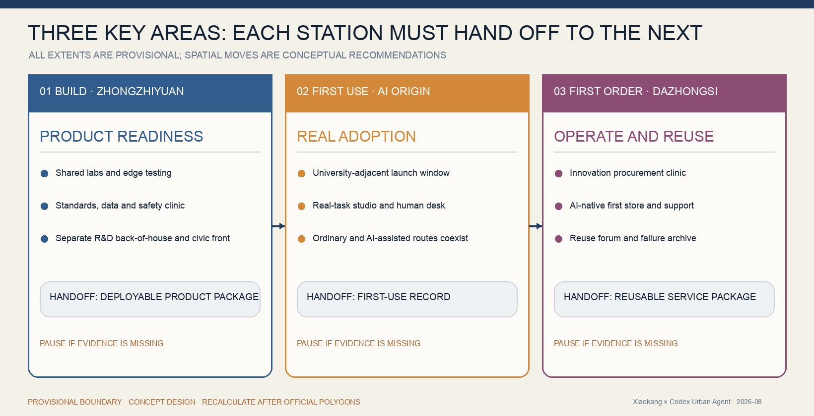
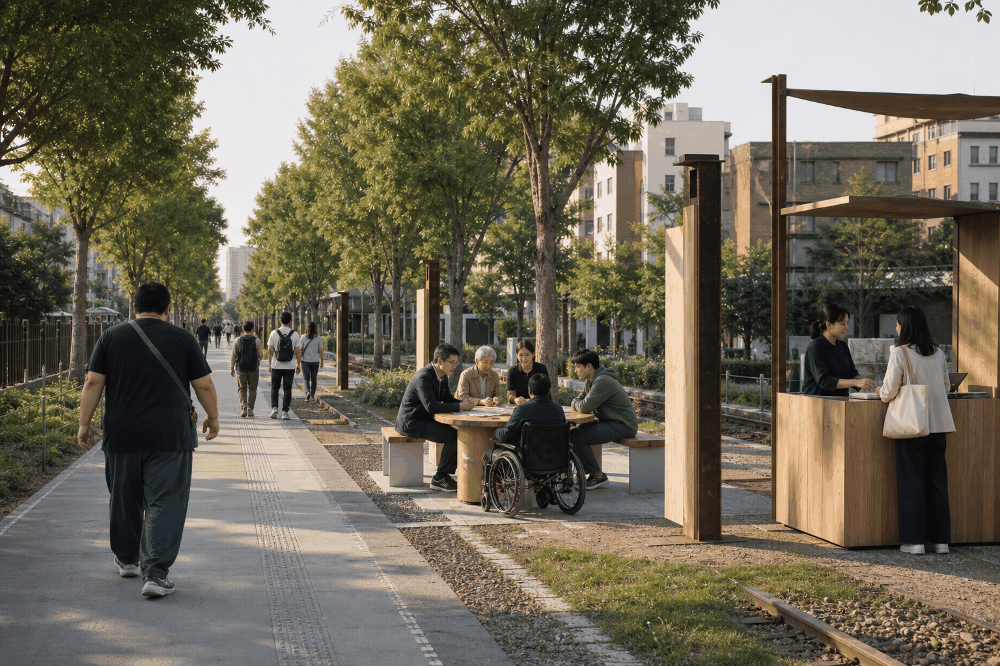

JING-ZHANG FIRST MILE
An original First-Mile Gate identity and a three-station operating chain turn the existing Jing-Zhang public-space spine into adoption infrastructure: product readiness, real first use, verifiable first order and reuse, with ordinary routes, human handoff, pause, exit and public evidence built in.
JING-ZHANG FIRST MILE

This proposal addresses one problem that many AI showcase districts leave unresolved: after technology leaves the laboratory, who helps it gain its first real user and turn one use into an operable, procurable and reusable city service? Zhongzhiyuan, AI Origin and Dazhongsi form a continuous product-ready–first-use–first-order handoff. The minimum public promise is that the ordinary route, staffed service and commons still work when AI is removed. Reviewers can inspect the task journey, First-Mile Passport, quantity basis, G0–G4 gates and failure archive rather than trusting a future-looking image.
Centennial Jing-Zhang Culture and a New AI Culture: From Engineering Autonomy to Urban Adoption

The proposal does not treat “centennial Jing-Zhang” as nostalgic decoration. It treats it as a living civic culture. A century ago, the railway completed a first mile from knowledge to real operation through engineering autonomy. Today, Haidian must help AI complete the first mile from model to real city. Their shared values are not technological spectacle but autonomy, truth-seeking, collaboration, access and public learning. Railway grammar becomes five institutions: the rail line becomes a continuous three-station adoption chain; sleepers become G0–G4 evidence gates; the platform becomes an equal first-use interface; train formation becomes a responsibility handoff among developer, user and operator; and the timetable becomes a reviewable four-season civic rhythm.
Culture therefore enters space, operation and public memory together. Qinghuayuan Station, Dazhongsi and the existing heritage park are orientation and narrative anchors. The First-Mile Gate is not another technology totem: it publicly shows the open entrance, evidence state, staffed service and right to exit. Annual recognition rewards solved real problems, ordinary users completing tasks, unfamiliar operators taking over, and failures being openly reviewed—not launch volume. This is a design-value translation; it does not invent railway history, heritage boundaries or an official commemorative interpretation 来源 来源.
Three Positionings and Five Functions: From the Taskbook to Testable Mechanisms

The proposal directly responds to the taskbook's three positionings—Centennial Jing-Zhang Cultural Belt, Urban AI Life Experience Belt and AI Convergence Innovation Belt—and five functions—Full-Stack Independent AI Innovation System, World-Class AI Innovation Ecosystem, New Paradigm of AI-Enabled Scenarios, Intelligent and Vibrant AI City, and Global Voice in AI Governance. These are not eight parallel slogans. They form a causal chain: the cultural belt supplies autonomy, truth-seeking, access and public learning; the life-experience belt tests public value through ordinary work, living, learning and social tasks; and the convergence belt connects research, first use, first order and reuse. The five functions explain how capability, ecosystem, scenarios, city life and governance output become real 来源 标准.
| Taskbook requirement | First-Mile response | Primary spatial anchor | Evidence a reviewer can open |
|---|---|---|---|
| Centennial Jing-Zhang Cultural Belt | Translate engineering autonomy into G0—G4, accountable handoff and a public failure culture | Continuous heritage-park public realm, First-Mile Gate and three handoff landmarks | Centennial culture figure, identity system and culture chapter |
| Urban AI Life Experience Belt | Test usefulness through four daily domains while preserving ordinary routes, staffed help and harmless exit | Everyday public realm, centred on the AI Origin First-Use Commons | Urban-life/governance figure, first-user journey and 12 scenario cards |
| AI Convergence Innovation Belt | Replace a showcase corridor with product readiness, first real use, first operational order and verified reuse | Zhongzhiyuan—AI Origin—Dazhongsi and the two wings | Three-station structure, First-Mile Passport and delivery ledger |
| Full-Stack Independent AI Innovation System | Connect compute, data, model, tooling, operations and adoption through a six-layer evidence stack | Zhongzhiyuan Product-Ready Yard, handing off to the other stations | Full-stack adoption figure and G1 readiness gate |
| World-Class AI Innovation Ecosystem | Organise cross-sector and cross-region collaboration around reusable outcomes, not a list of parks | Three Zones and Two Wings, plus proposed regional interfaces | Seven global cases, reuse pack and six-party alliance |
| New Paradigm of AI-Enabled Scenarios | Give every scenario a problem owner, non-AI baseline, human takeover, cost state and stop condition | 12 scenarios and 3 testing settings | Scenario cards and gate summary |
| Intelligent and Vibrant AI City | Keep travel, service, free stay, accessibility and night-time help functional after AI is removed | Day/night work—living—learning—social task chain | Urban-life/governance and mobility-blue-green figures |
| Global Voice in AI Governance | Publish gates, passport, failure archive, dual ledgers and reuse packs as a versioned open protocol | First-Mile Console, failure/reuse archive and Global First Mile Network | JZ-AUP v1.0 draft and long-term operating model |
The three positionings and five functions are registered as 指标 and 指标. A requirement is not complete because it appears once in prose: each item needs a mechanism, place, evidence and stop condition. The detailed mapping remains machine-readable in the task coverage matrix and visual/assets/taskbook-strategy-crosswalk.json.
Design Basis and Source List
The evidence base is deliberately restrained. The official announcement and agent taskbook define the scope, tasks and expected depth. Registered public material locates roads, waterways, transit, heritage and existing public space. Only then do the proposal's own geometry, metrics and figures explain design choices. Design inference never turns back into an “official fact” 来源 来源 深度.
At submission, five registered sources can support formal argument and one supports provisional geometry only. The rule is simple: public evidence supports facts, provisional material supports comparison, and missing information stays visibly open. Full provenance, rights, standards and design-depth records remain in the audit layer rather than crowding the reading layer 来源 来源.

The largest unresolved evidence gap is the official overall boundary and the three key-area redlines. The current extents are therefore one shared conceptual ruler: useful for comparing station relationships, spatial ratios and project counts, but not for approval, demolition or engineering set-out. When official geometry arrives, land use, roads, green space, public space, buildings, phasing and areas will be recalculated together. This organizer-owned gap does not reduce content eligibility 空间数据 空间数据 指标.
Three-Level Scope Framework
Each scale answers one question. The 43.6 km² Coordinated Research Area asks which link is missing from Haidian's AI innovation chain. The approximately 11.4 km² Overall Design Area arranges industry, mobility, public space and renewal projects. The 368.4-hectare Key-Area scope takes the Build—Use—Order handoff down to buildings, streets and operating interfaces. The large scale sets direction, the middle scale builds the system, and the small scale tests whether people can actually use it 深度 深度 标准.

The three scales correct one another along the same chain. Industry strategy must find a spatial carrier; each spatial move must become a project; and the key-area trials must be able to revise the original industry and operating assumptions. Areas, ratios, capacities and quantities are recomputed from one set of layers. Where evidence is missing, the control remains pending rather than acquiring a false precision 空间数据 空间数据.

The atlas grounds the adoption chain in real urban relationships. The north meets Qinghe and technology campuses, which supports product readiness and safe handoff. The middle meets Wudaokou, Qinghuayuan heritage and transit, which supports first users and university–community co-testing. The south meets Dazhongsi heritage, transit and everyday commerce, which supports acceptance, first orders and reuse. Cross streets, campuses, communities and stations create lateral “launch ports,” so the belt is not merely a north–south visitor promenade. The base uses registered OSM orientation data; key-area extents remain provisional constraints and are not survey, redline, engineering or approval evidence 来源 [assumption:A-CONTEXT-MAP-001].
The overall concept is Jing-Zhang First Mile. The “first mile” is not a distance or a product launch event. It is the fragile passage after an AI system leaves the laboratory: a need may have no accountable owner; a prototype may have no evidence that an ordinary user can finish a task; a visible pilot may have no operating handoff, procurement path or repeat use; and the public service may disappear when the technology team leaves.
The proposal therefore builds a city-scale launch operating system that helps one product gain four outcomes in order: its first real user, first operable scenario, first verifiable order and first verified reuse. The three key areas form a governed handoff chain:
- Zhongzhiyuan — Build & Ready Station: turn an algorithmic prototype into a deployable product with standards, limits and operating documentation.
- Beijing AI Origin Community — Use & Adopt Station: let students, founders, residents and front-line operators complete the first real tasks together.
- Dazhongsi — Operate & Scale Station: connect verified services to enterprise adoption, commercial operation and cross-district reuse.
The Zhongguancun Technology Services Wing provides intellectual-property, compliance, data, capital and procurement guidance. The Xiaoyue River Scenario Enablement Wing supplies real operating settings with named problem owners, non-AI baselines and human fallback. This is a design proposition, not a statement of government procurement, funding or approval 来源 来源.
Original Identity: First-Mile Gate / Shouchengmen

The First-Mile Gate compresses the proposal's operating discipline into a memorable and executable mark. The open frame says that the belt is not a closed campus; the continuous rail/path joins Jing-Zhang engineering heritage to today's adoption workflow; five sleepers are G0–G4, where progress and pause are equally legitimate; and the forward point means that evidence must pass before the next stage. The original monoline mark requires no third-party trademark and works on four low-cost carriers: wayfinding pylons, first-use evidence passports, G0–G4 field signs and launch-event badges. It is not a decorative layer on buildings. It lets users and operators see the current gate, accountable party and exit path.
The workflow has five gates 指标:
| Gate | Required question | Minimum evidence | If it fails |
|---|---|---|---|
| G0 Real Need | Who bears which cost, and who has authority to define the need? | Named owner, current-service baseline, affected people | Do not admit the task |
| G1 Product Ready | Is the prototype safe, compliant and maintainable within a stated scope? | Data register, model limits, human handoff, maintenance owner | Return to Build & Ready |
| G2 First Use | Can an ordinary user complete a real task and exit without harm? | Task completion, errors/complaints, non-digital alternative, field record | Pause and revise |
| G3 First Adoption | Will the operator take responsibility, and are cost and liability viable? | Training sign-off, service level, cost range, procurement/cooperation status | Retain as research only |
| G4 First Reuse | Does value remain after changing place and team? | Reuse pack, version differences, repeat use, exit restoration | Do not scale |
The spatial structure is “one line, three stations, two wings and multiple first-use scenarios.” The line is a workflow rather than a new statutory boundary; the stations are handoff surfaces rather than isolated pavilions; and the wings are interfaces for professional supply and real demand.
Regional amplification is specified as input and output rather than a generic arrow. AI North Latitude Community could bring early teams and receive readiness packs; Future Science City and Huairou Science City could bring research and receive evidence from real urban tasks 来源 来源 来源.
E-Town could bring manufacturing and industry settings and receive operationally verified services; Jing-Jin-Ji partners could bring cross-regional needs and receive reuse kits with changed conditions, training, service levels and exit methods. These are proposed interfaces, not established partnerships 来源.
Coordinated Research Area: Industry and Future City Research
Haidian already has universities, models, talent, capital and launch events. The scarce capability is converting these assets into products that real people use, another team can operate and another place can reuse. The strategic diagnosis therefore focuses on four breaks: unowned demand, adoption without evidence, pilots without operational handoff, and demonstrations without a viable public or market adoption path. Beijing's 2026 scenario policy links lists of demands, capabilities and demonstration projects to first trials, first uses, cooperative innovation procurement and market orders. This proposal translates that policy direction into a spatial-operating method without claiming that any proposed project has been approved 来源.
Seven Global Cases: From Test Capacity to Adoption Capacity
| Case | Verified mechanism | Translation for Jing-Zhang | Condition not copied |
|---|---|---|---|
| Punggol Digital District Open Digital Platform | Test in a digital twin before entering the live district | A simulation–limited-domain–real-use readiness sequence | National platform and data authority cannot be assumed |
| Helsinki Mobility Lab | Companies, researchers, city teams and residents co-test toward business and cross-city use | Record adoption and reuse, not visitor numbers | Port and local transport conditions differ |
| Test in Tallinn | One city entry point connects teams to departments, sites, data, residents and services | A Jing-Zhang First Mile Window | Local legal authority must be confirmed |
| Boston New Urban Mechanics | A small city team is a front door between community problems and prototypes | Start with problem ownership and resident relations | Do not copy the administrative structure |
| Toyota Woven City | Inventors and residents/visitors iterate continuously | Treat residents, shop staff and property operators as co-developers | Private test-city powers do not transfer |
| EU experimentation and innovation procurement | Sandboxes, test beds, living labs and procurement support lab-to-market uptake | Make handoff, cost and procurement status G3 evidence | Do not import EU legal procedure |
| Beijing scenario-opening mechanism | Demand, capability and demonstration lists connect trials to orders | A problem order, capability card, first-use credential and reuse pack | No invented amount, selection or endorsement |
These cases support method, not statutory spatial controls 来源 来源 来源 来源 来源 来源.
The Jing-Zhang First Mile Operating System
Four transferable objects connect the stations and wings:
1. First-Mile Task Order: problem owner, target user, current workflow, non-AI baseline, spatial conditions, data boundary and budget status. 2. Hypothesis and Evidence Ledger: source, period, state, boundary, next test and stop condition for every claim; synthetic data can never be presented as an operating result. 3. Urban First-Use Credential: version, place, people, human handoff, defects, cost range, accountable person and reuse permission after a pilot. 4. Reuse Pack: interfaces, training, service level, exit restoration, licence and conditions that must be retested after relocation.
The public operating interface is the First Mile Console. It is for operators before it is a promotional dashboard: it shows which gate each task has reached, which evidence is missing, which scenario is paused and which human service remains available. The public sees only de-identified information relevant to rights and accountability. This adapts the contributor's local practice—1Cake-style hypothesis ledgers, operational dashboards, lean launch discipline, retail-style portfolio management and proof libraries—into a civic evidence system. That experience calibrates method; it is not competition evidence or an official fact 标准 深度.
Zhongzhiyuan Full-Stack Independent AI Innovation System: Six Evidence Layers

“Full-stack independence” does not mean building every component in a closed system. It means critical capabilities are replaceable, auditable, transferable and able to degrade safely. The six layers are compute and edge; data and intellectual property; model evaluation and safety; tooling, open source and deployment; scenario operations and service; and adoption, procurement and reuse. Each layer has minimum evidence. Data requires licence, minimisation and deletion. Models require capability limits, red-team tests and human takeover. Tooling requires deployment by an unfamiliar team. Operations require a non-AI baseline, roster and service level. Adoption requires acceptance, cost, procurement state, training and exit restoration.
Zhongzhiyuan prepares L1—L4 and exits through G1. AI Origin tests L3—L5 through real tasks and G2. Dazhongsi verifies L5—L6 operations, first-order and reuse conditions through G3—G4. Technical leadership cannot bypass user completion, operator takeover or adoption evidence; likewise, a satisfying interaction cannot conceal licensing, safety or maintenance gaps. The structured stack is recorded in visual/assets/taskbook-strategy-crosswalk.json as an open draft for professional and ecosystem development, not as a claim that a national platform, company or government has adopted it 来源 [assumption:A-PILOT-001].
Overall Design Area: Urban Renewal and Regulatory-Plan-Level Urban Design
At this level, the First Mile workflow becomes a set of checkable spatial objects: a complete conceptual land partition, six programme carriers, a north—south working spine, transverse slow-mobility links and phases tied to the three stations. Together they answer where activity occurs, who uses it and how responsibility moves, without asking one masterplan to impersonate every professional conclusion 标准 空间数据 深度.
Building footprints and road layers test carrying locations and mobility relationships; areas and quantities are recomputed from the same data 空间数据 空间数据 指标. Heights, intensity, road lines, setbacks and facility standards remain pending official planning controls and field evidence.
Five reversible spatial components carry the workflow: street-level First Mile Windows receive needs and teams; shared-building Productization Workbenches handle standards, data, compliance and operations; public First-Use Rooms host small real tasks; the Dazhongsi First-Order Living Room supports procurement consultation and reuse demonstrations; and Evidence Beacons show project state, human entry and exit method. Existing ground floors, park edges, underused interfaces and leftover spaces should be tested before new construction. Exact buildings, equipment, engineering quantities, heights, intensities, road lines and setbacks remain pending official planning, ownership, fire and municipal conditions.
Detailed Design of Key Areas
The three key areas are not three interchangeable technology campuses. Zhongzhiyuan prepares a product to leave the laboratory; AI Origin handles an ordinary person's first real use; Dazhongsi handles operating takeover, first order and cross-district reuse. They share one gate system but carry responsibilities that cannot substitute for one another 空间数据 空间数据 深度.

| Key area | First-mile role | Spatial move | Required handoff |
|---|---|---|---|
| Zhongzhiyuan AI Independent Innovation Accelerator | Build & Ready | Shared evaluation, edge testing, standards clinic and a low-carbon Qinghe public interface | A deployable product with data register, failure limits, human handoff and maintenance plan |
| Beijing AI Origin Community | Use & Adopt | A visible problem desk, first-use rooms and a university–community slow-mobility link | Evidence that ordinary users and unfamiliar staff can finish, correct and exit a real task |
| Dazhongsi AI Industry Cluster | Operate & Scale | First-order living room, AI-native retail, reuse stage and four-quadrant walking links | Cost, service level, contract/procurement status, training and exit terms in a reuse pack |
Each station joins programme carriers, public space, slow-mobility links and a first-phase project. Current extents compare spatial relationships only; exact siting still requires redlines, existing-building surveys, ownership, traffic, utilities, fire and heritage evidence 空间数据. Zhongzhiyuan may not send an unproductized prototype into public space; AI Origin may not convert positive feedback into a claim of market demand; and Dazhongsi may not call a display, intent or media impression an order.
Three Real Places: Each Answers One Irreplaceable Question

Zhongzhiyuan is not another AI exhibition hall. Between Qinghe, the heritage park and northern campuses, it forms a research back-of-house, visible test yard and safe-handoff desk. The ordinary public route stays continuous; a prototype without a data owner, human takeover and maintenance plan stops before G1.

AI Origin connects Wudaokou, Qinghuayuan heritage, transit and campus life through an ordinary route, optional AI route, staffed desk and First User Table. Real adoption is not spectatorship: an ordinary person completes a task, can correct it, reach a human and exit without loss.

Dazhongsi links station, heritage interface, public living room and everyday commerce in one arrival loop, allowing a procurement clinic, non-commercial stay, training and reuse archive to coexist. If acceptance, cost, liability, procurement state, training or exit is blank, the pilot is not a first order. All three diagrams use presentation-level orientation; exact siting still requires official redlines, survey, ownership, traffic, fire, trees and heritage review.
Functions, building carriers, public-space continuity, mobility and project nodes remain concept recommendations for professional development, not final legal parcels or approved construction.
From Regional Concept to Reviewable, Scaled Modules
The following drawings use concept study modules to test spatial relationships, minimum dimensions, quantities and stop conditions. They are not legal parcels, measured surveys or construction drawings. Before siting, the team must verify official redlines, title, existing buildings, utilities, trees, fire, traffic, heritage and accessibility [assumption:A-CONTROLS-001] [assumption:A-DESIGN-NODES-001].
| Module | Study extent and key quantities | Public-space baseline | Stop before the next station |
|---|---|---|---|
| Zhongzhiyuan Product-Ready Yard | 180 × 120 m (2.16 ha); 36 × 24 m visible test court; 18 × 12 m safety/data clinic; 18 × 12 m operations handoff lab; 12–20 m ecological buffer | Continuous 6 m ordinary public route; research back-of-house separated from the public test front | No data owner, human takeover or maintenance plan: stop before G1 and buy no device |
| AI Origin First-Use Commons | 160 × 110 m (1.76 ha); Ø18 m First User Table; 12 × 6 m human/appeal desk; 18 × 8 m limited launch window | 6 m ordinary route is primary; 3 m AI route is optional; every user can exit without loss | If any of three real tasks lacks human escalation or exit, pause G2 immediately |
| Dazhongsi First-Order Room | 200 × 160 m (3.20 ha); 24 × 12 m procurement clinic; 30 × 18 m first-order room; 24 × 12 m reuse/failure archive; 6 m arrival loop | Continuous station arrival, crossing seams and non-commercial stay; heritage buffer width remains TBC | If acceptance, cost, liability or exit terms are blank, do not call the pilot a first order |




The three flagship experiences share one public-space baseline while changing protagonists. At Zhongzhiyuan, safety staff and developers complete a visible handoff. At AI Origin, ordinary residents, a wheelchair user and front-line staff complete a real task together. At Dazhongsi, a small team, operator and procurement adviser turn one pilot into acceptance, training and exit conditions. The image communicates human scale, everyday use, accessibility and staffed presence only; it is not evidence of existing conditions, interviews, partnership or a built result 来源 [assumption:A-TRIPTYCH-001].
AI Innovation Ecosystem, Personas, and AI+ Scenarios
Urban AI Life Experience Belt: Four Real Task Domains in One Day

The life-experience belt does not measure vitality by how much AI people see. It asks whether an ordinary person can complete a real task more easily without losing choice. The 08:00 work chain tests commuting, finding service and completing one work task. The 12:30 living chain tests eating, public service, shopping and accessible stay. The 18:00 learning chain tests railway-culture understanding, first-use training and correction. The 20:30 social chain tests the public living room, evening activity and a safe trip home. Every chain first defines a non-AI public baseline, then allows AI as an optional enhancement.
The day/night chain turns vitality into four observable outcomes: task completion, reachable human help, harmless exit and continued free public use. Three-station windows, walking/cycling links and first-use rooms support the day. Night scenarios open only with lighting, staffing, help, removal and noise-management conditions. Testing may not weaken the everyday rights of older adults, children, disabled people, people without smartphones or people who decline data permission 空间数据 深度.
The First Mile does not substitute visitor numbers for user value. Six personas collaborate along the same chain 指标:
| Persona | Real task | Spatial response | Non-negotiable boundary |
|---|---|---|---|
| University researcher / open-source developer | Turn research into something another team can deploy | Productization workbench and First Mile Window | Clear IP, licence and attribution |
| Startup / independent developer | Find a first real user and first paid or procured opportunity | Shared testing and first-order clinic | Residency, pitching or intent is not an order |
| Scenario owner / enterprise customer | Solve a named problem at controlled cost | Task desk, procurement clinic, reuse stage | Named owner, budget state and acceptance responsibility |
| Front-line operator, shop staff or property staff | Take over, correct and maintain service | Visible human desk, training room and operations console | No launch without training, roster and stop authority |
| Resident, older adult, child or disabled person | Safely complete travel, service, shopping or leisure tasks | Ordinary and AI-assisted paths coexist | No default face recognition; preserve non-digital service |
| Investor, legal, standards or data specialist | Decide whether and how to continue responsibly | Joint clinic in the services wing | Advice does not replace approval; disclose conflicts |
Twelve Scenario Cards: Every Scenario Must Pass the Gates
The twelve scenarios 指标 each require a user, problem owner, place, non-AI baseline, minimal data, human handoff, operator, cost status, success measure and stop condition.
| # | Scenario and place | First-mile value | Human and exit boundary |
|---|---|---|---|
| 01 | Urban Problem Launch Desk — AI Origin | Residents, enterprises and operators publish verifiable tasks | Human moderation merges duplicates and explains unowned needs |
| 02 | Pre-Street Model Evaluation — Zhongzhiyuan | Test facts, bias, robustness, copyright, privacy and refusal | Professional final review; severe errors block G2 |
| 03 | Agent Operations Handoff Pod — Zhongzhiyuan | Unfamiliar operators deploy, pause, restore and export without developers | Failed independent takeover returns to G1 |
| 04 | AI Startup Service Copilot — AI Origin | Navigate public policy, space, compute, talent and scenario information | Public information only; a human desk may correct or overturn |
| 05 | Accessible Slow-Mobility Task Chain — Heritage Park | Detect barriers, create work orders and verify closure | Paper/phone reporting remains; unsafe guidance stops immediately |
| 06 | Multilingual Railway Culture Guide — whole line | Explain Jing-Zhang engineering, Zhongguancun innovation and First Mile method | Human historical review; no personal route tracking |
| 07 | Public-Space Microclimate Assistant — Qinghe/Xiaoyue interface | Turn environmental data into shade, water and activity adjustments | Landscape and site staff decide; no personal identity data |
| 08 | Low-Speed Service Robot First-Use Route — Xiaoyue wing | Test delivery/inspection safety and operating cost in real walking space | Limited domain/time/speed, safety staff and emergency stop |
| 09 | AI-Native First Store — Dazhongsi | Test product understanding, after-sales, human service and repeat use | No profile pricing; cash and human service always available |
| 10 | Cooperative Innovation Procurement Clinic — Dazhongsi | Define acceptance, cost, responsibility, IP and exit before procurement | No award or funding promise; human procurement/legal review |
| 11 | First Mile Console — three-area operations | Publish gates, responsibility, missing evidence, pause and expiry | De-identify public view; no automated high-impact decisions |
| 12 | Reuse Stage and Failure Archive — Dazhongsi/whole line | Show reuse packs, changed conditions and lessons from failure | Reach is not reuse; contributors may remain anonymous |
Scenarios 02, 03 and 08 form three industry test settings 指标. They separately test technical reliability, operational takeover and physical safety; passing one cannot substitute for the others.
Three Pilgrimage Landmarks: Celebrate Completed Handoffs, Not Technology Worship
1. First-Mile Zero: connects Zhan Tianyou's independent engineering spirit with the disciplined passage from prototype to real use; historical content requires professional review. 2. First User Table: records verified improvements jointly made by residents, shop staff, property operators, developers and reviewers; it has no commercial ranking. 3. Fail & Scale Signal: makes visible which projects paused, why they stopped, how they changed and where they were genuinely reused.
All three 指标 are reversible, removable and accessible conceptual components. Exact location, scale, heritage relationship and construction conditions require official geometry and professional confirmation 空间数据 深度.
All scenarios follow data minimization, explanation, human review, a non-digital alternative and the right to exit. Urban agents may help organize information and proposals but cannot replace planning approval, procurement decisions, medical or legal judgement, or decisions that materially affect individual rights.
Land Use, Building Scale, and Retain-Renovate-Demolish Strategy
The land-use layer is a complete, closed, non-overlapping concept partition consistent with the machine-readable boundary. Its current measured coverage and ratios are derived from provisional geometry. The six building polygons are conceptual program carriers, not an existing-building survey or demolition decision. They indicate where a readiness hall, first-use room, service clinic, first-order room or operating support could be investigated after ownership, structure, fire, heritage, municipal and regulatory controls are obtained 标准 深度 深度 空间数据 空间数据.
Retain-renovate-demolish decisions follow a staged rule: first retain viable structures and ordinary public service; then test low-impact interior or interface renovation; only consider replacement after safety, ownership, public value and whole-life carbon evidence. Floor area ratio, height, density, setback and precise capacity remain unknown because official controls and surveyed buildings are missing.
Transport, Rail, Municipal Infrastructure, and Public Services
The mobility proposal connects the three stations through the heritage-park spine and transverse walking links. It prioritizes walking breaks, barrier-free continuity, bicycle parking, rail interchange and low-speed controlled test routes before increasing vehicle capacity. Every AI-assisted route retains an ordinary wayfinding and service option 深度 深度 空间数据 空间数据 空间数据.

By July 2026, Beijing's official landscape authority had reported completion of phase-two supporting works for the Jing-Zhang Railway Heritage public space, including approximately 30.01 hectares in the northern segment and a north-south/east-west fishbone slow-mobility network. The earlier 2.5-kilometre first phase retained rail tracks, switches and station heritage 来源 来源. This proposal therefore does not claim the completed public space as its own work or invent another future green axis. It adds four light and removable adoption services: First Mile Windows, evidence beacons, staffed handoff points and AI-assisted routes limited by place and time. With AI switched off, paths remain open, shade remains and seating still works.
AI industry services, talent services, edge compute, distributed energy and conventional infrastructure should share adaptable carriers where technically appropriate. Pipe networks, energy, drainage, flood control and fire protection are prerequisites for formal design; their absence is recorded as an assumption rather than filled with agent-generated precision.
Blue-Green Network, Public Space, and Urban Character
Jing-Zhang Railway Heritage Park is the longitudinal public spine. Qinghe and Xiaoyue River interfaces, universities, enterprises and neighbourhoods provide transverse links. The conceptual green and public-space network supports daily walking, cycling, shade, rest, sport, innovation exchange and controlled testing; public access, free staying and non-commercial use take priority over enterprise display 深度 空间数据 空间数据 指标 指标.
Urban character combines the history of Jing-Zhang engineering, Zhongguancun's culture of independent innovation and a new culture of accountable AI adoption. Wayfinding, bilingual interpretation and public art should distinguish verified historical content from contemporary design. Brands, typefaces, portraits, images and enterprise marks require rights clearance. No precise heritage buffer, roof control, height line or facade mandate is asserted without professional and statutory evidence 标准.
The former Qinghuayuan Station appears in the official municipal heritage registry and provides a historical orientation point, but this proposal does not infer a protection boundary, construction-control zone or permit condition 来源. Roads, rail, waterways, stations and campuses in the figures use a simplified OpenStreetMap presentation layer explicitly marked non-statutory. It supports spatial orientation only and cannot replace official survey, ownership or planning-control data 来源 [assumption:A-CONTEXT-MAP-001].
Renewal Projects, Implementation Policy, and Phasing
The implementation package is a portfolio of small, reversible projects rather than one capital-heavy showcase 深度 深度 空间数据.
| ID | Project | Phase-one deliverable | Gate before expansion |
|---|---|---|---|
| FM-01 | Jing-Zhang First Mile Window | Three-list intake rules, task template and public status page | Named operator, service boundary and appeal channel |
| FM-02 | Zhongzhiyuan Product-Ready Yard | Evaluation, operations handoff and edge-test workbenches | Safety, fire, data, equipment and maintenance review |
| FM-03 | AI Origin First-Use Community | One real task chain with ordinary and AI paths | User co-test, site operation and preserved non-digital service |
| FM-04 | Dazhongsi First-Order Living Room | Procurement clinic, first store, reuse stage and failure archive | Clear procurement state, responsibility, cost and after-sales |
| FM-05 | Jing-Zhang Slow-Mobility Stitching | Barrier list, human walk audit and low-regret repair package | Road line, underpass, traffic and accessibility review |
| FM-06 | Qinghe–Xiaoyue Blue-Green First-Use Interface | Reversible nodes for microclimate, rest and controlled scenarios | River, ecology, flood and operating-hours confirmation |
| FM-07 | First Mile Console and Public Evidence Library | G0–G4 state, responsibility, expiry, pause and reuse record | Data classification, cybersecurity, de-identification and maintenance |
| FM-08 | Global First Mile City Network | Bilingual reuse packs, annual failure review and cross-city task exchange | Voluntary partners, rights/data licences, no invented commitment |
The First 90 Days: Verify One First Real User, Not the Whole Belt
The first concept pilot is the AI Startup Service Copilot at Beijing AI Origin Community. It works only with public information on policy, space, compute, talent and scenarios; it does not replace approval or professional advice. G0 recruits 5–8 real founders and 2–3 service staff to freeze three common tasks and the existing human baseline. G1 tests sourcing, refusal and human escalation with rights-cleared content and synthetic questions. G2 runs limited use beside a visible human desk. G3 asks an unfamiliar staff member to take over. Only after task completion, human fallback and the reuse pack pass G4 may reuse at Zhongzhiyuan or Dazhongsi be considered. Participant counts are research recruitment guidance, not completed samples or official targets.
The first phase buys no robots, builds no heavy exhibition hall, collects no face or continuous trajectory, and does not use response count, event traffic or publicity as success. Real completion, repeat use and operator handoff still need a trial baseline 指标 指标 指标.
Before G0, the field team uses visual/assets/field-validation-protocol.json: walk the ordinary route, accessibility breaks and distance to human service; interview recruits with the same 12 questions; record human-baseline time, error, escalation and exit for three tasks; obtain consent and store de-identified results. Five to eight founders and two to three service staff are recruitment targets, not completed samples. Synthetic tests, internal reviews and the concept visualization are not user evidence.

A first user is not an event check-in. It is a person who completes a real decision. The six-step journey starts with a visible ordinary route and genuine choice, then freezes the real task, human baseline, limited AI first use, correction and human takeover, and ends in no-loss exit, conditional reuse or legitimate stop. Success cannot be reduced to satisfaction: record completion, source traceability, correction time, unfamiliar-operator takeover, unit service cost, no-loss exit and conditioned repeat use together.

Each pilot produces a First-Mile Passport following visual/assets/first-mile-passport.example.json. It records the problem owner, first user, real task, human baseline, data boundary, human handoff, unit cost, exit/deletion, human-decision delta and reuse condition. G0–G4 are expiring and revocable states, not permanent badges. The current example is explicitly synthetic_non_operational; every real organization, participant, performance, reuse and procurement field is null. It proves only that the record and handoff structure are reproducible, not that a pilot occurred 来源.

The first-pilot design-control envelope is RMB 0.98–1.84 million: research/co-design RMB 150–250k; staffed service and training RMB 180–300k; reversible structures/furniture RMB 250–500k; accessibility/wayfinding RMB 150–300k; testing/data security RMB 120–250k; plus about RMB 130–240k contingency at 15%. This is an order-of-magnitude concept assumption, not a quote, fiscal budget or investment commitment. Decision requires official scope, quantities, a site survey, procurement route and at least two quotations per item [assumption:A-COST-ENVELOPE-001]. A 10% / 25% / 25% / 25% / 15% evidence-linked resource-release sequence is recommended for G0–G4; the implementing entity must determine lawful contractual payment terms.

The range is derived from visual/assets/pilot-bom.json: one human-baseline package, 12 fixed interviews, 80 two-person service shifts, six training/takeover drills, a 36 m² demountable service kit, one First User Table and sign kit, one full-route accessibility audit, 12 field information signs, and one package each for rights clearance, evaluation, and privacy/security. Quantities and unit rates remain option-comparison assumptions. Permanent works, land, utility relocation and bulk device procurement are outside this pilot and must not be inferred. Update after site survey, verified quantities, procurement route and at least two quotations per item 来源.
Phasing follows a small, reversible and operations-first discipline. Phase 1 funds problem research, staffed service, accessibility, safety and the evidence system. Phase 2 introduces equipment and spatial retrofit only after the first gates. Phase 3 expands only services that have been genuinely reused. Budgets must record category, quantity basis, price source, range and approval state. The RMB 0.98–1.84 million range supports first-pilot option comparison only; it is not extrapolated to a whole-belt investment or a fiscal commitment 深度.
The annual rhythm supports the workflow rather than standalone events: publish city problem orders in spring, run product-readiness challenges in summer, host a real-user first-use week in autumn, and publish the failure, reuse and exit ledger in winter.
Long-Term Operation and a Global Public Brand Asset

The First Mile cannot become an ownerless design after the call. A lightweight six-party alliance is proposed: problem owners define real tasks and retain stop authority; product teams maintain versions and failure limits; site operators handle rosters, takeover and recovery; residents and first users help define success and harm; universities and professional bodies support evaluation, ethics, standards and rights clearance; government or platform operators coordinate space, rules and procurement interfaces only within their authority. No single party may declare success alone. This is a governance proposal, not a claim that any named institution has agreed to participate.
Four public checkpoints structure the year: spring problem orders, summer product readiness, autumn first-use week, and winter failure/reuse ledger. Every pilot keeps two accounts: a public-value ledger records who completed which task, fairness of access and right to exit; an operating-economics ledger records staffing, maintenance, unit service cost, procurement/cooperation status and restoration cost. Year 1 proves one place, one user type and one operating roster. Year 2 replicates only G4 services and records which conditions must be retested after moving. Year 3 may form a Global First Mile Network through open interfaces, bilingual reuse packs and city-to-city task exchange. Its success is measured by verified reuse and the quality of openly documented failure, not the number of city logos.
JZ-AUP v1.0: Make a “Global Voice” Executable, Contestable and Reusable
The governance output is named the Jing-Zhang AI Urban Adoption Protocol (JZ-AUP v1.0). It is not a declaration but five openable objects: the First-Mile Task Order, G0—G4 gate record, First-Mile Passport, Failure and Reuse Archive, and the Public-Value and Operating-Economics Ledgers. Every object records version, accountable person, evidence state, pause/exit method and public scope. Cities exchange only authorised, de-identified structures and reuse conditions—not personal data—and a one-time pass never becomes a permanent licence.
The protocol proposes one bilingual annual release covering problem orders, rule changes, representative failures, exit restoration and reuse packs that pass G4, with challenge review by users, operators, developers and independent professionals. A global voice is not created by first declaring an “international standard”; it is created when other cities can inspect, criticise, modify and retest the method under different conditions. Governance knowledge is reused only after cross-team takeover, cross-place retesting and real exit records exist. JZ-AUP is currently an open protocol draft authored by this proposal, not an official standard, international recognition or a commitment from partner cities 来源 标准.
Metrics, Area Recalculation, and Compliance Matrix
Spatial metrics are recomputed directly from the layers. The provisional Overall Design Area is approximately 11.41 km²; current concept partitions yield a green ratio of approximately 15.27% and public-space ratio of approximately 21.98%. These numbers support comparison within one shared extent; they are not statutory controls. Scenario cards, industry tests, personas, service zones, landmarks and gates are countable design commitments. FAR and real operating outcomes await official evidence and trial results 深度 指标 空间数据.

Full formulae, sources, confidence and task coverage remain in the structured audit layer. The reading layer distinguishes three meanings: spatial quantities recomputed from geometry, controls awaiting official conditions, and performance that must be recorded through operation. One category never impersonates another, and an aspiration is not presented as an achieved result.
Performance is read through four layers: technology (error, handoff and safety), user (real task completion and harmless exit), operations (takeover, maintenance and service level), and adoption (repeat use, procurement/cooperation status and cross-district reuse). A good result at one layer cannot prove project success, and test volume, launch-event attendance or media reach cannot substitute for real adoption.
Risk, Copyright, and Compliance
This is a concept-design and governance proposal. It does not claim official approval, a statutory plan, final land ownership, construction scale, procurement, funding or implementation commitment. Overall and key-area boundaries, detailed controls, road lines, buildings, ownership, utilities, fire and heritage conditions remain open for professional review 深度 空间数据 来源.
Four project-specific risks govern the design. First, public space must not become a privatized showroom: ordinary routes, free staying and non-consumption remain primary. Second, “first order” must not be presented as a government procurement promise: every procurement, funding and contract state is labelled. Third, transparent entry is reserved for university teams, independent developers and small firms as well as leading companies. Fourth, no device is procured before staffing, maintenance, expiry review and exit restoration have owners and resources.
Chinese and English narratives, figures, drawings and offline pages stay paired; asset provenance and rights are recorded in the source list and copyright statement. The authors remain accountable for facts, sources, rights, geometry and metrics. Any unsupported claim may be revised or removed through professional review.
References
brief/public-brief.mdbrief/site-package/design_brief.jsonbrief/site-package/allowed_design_space.jsonbrief/site-package/enums/brief/site-package/ranges/planning_limits.jsondata/source_registry.jsondata/processed/agent_fact_pack.mddata/processed/project_scope_summary.csvdata/processed/agent_task_requirements.csvdata/processed/source_use_matrix.csvdata/processed/missing_data_checklist.csv- Complete public-source records, rights, access dates and use limits are maintained in the structured source list 来源.